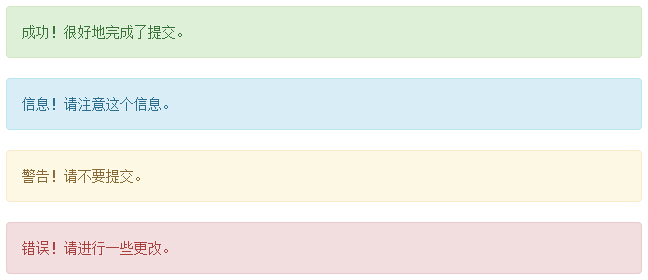
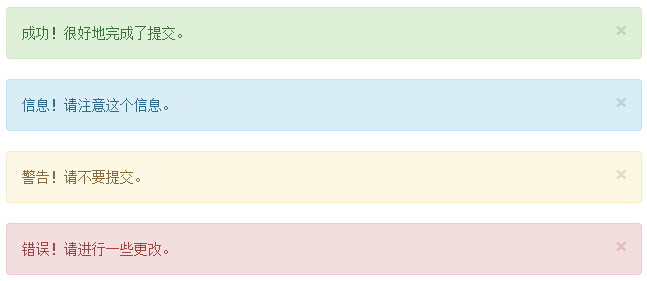
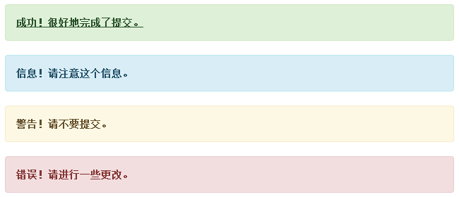

Bootstrap 警告（Alerts）
本章将讲解警告（Alerts）以及 Bootstrap 所提供的用于警告的 class。警告（Alerts）向用户提供了一种定义消息样式的方式。它们为典型的用户操作提供了上下文信息反馈。
您可以为警告框添加一个可选的关闭按钮。为了创建一个内联的可取消的警告框，请使用 警告（Alerts） jQuery 插件。
您可以通过创建一个 <div>，并向其添加一个 .alert class 和四个上下文 class（即 .alert-success、.alert-info、.alert-warning、.alert-danger）之一，来添加一个基本的警告框。下面的实例演示了这点：
<!DOCTYPE html> <html> <head> <title>Bootstrap 实例 - 警告（Alerts）</title> <link href="/bootstrap/css/bootstrap.min.css" rel="stylesheet"> <script src="/scripts/jquery.min.js"></script> <script src="/bootstrap/js/bootstrap.min.js"></script> </head> <body> <div class="alert alert-success">成功！很好地完成了提交。</div> <div class="alert alert-info">信息！请注意这个信息。</div> <div class="alert alert-warning">警告！请不要提交。</div> <div class="alert alert-danger">错误！请进行一些更改。</div> </body> </html>
结果如下所示：

可取消的警告（Dismissal Alerts）
创建一个可取消的警告（Dismissal Alert）步骤如下：
- 通过创建一个 <div>，并向其添加一个 .alert class 和四个上下文 class（即 .alert-success、.alert-info、.alert-warning、.alert-danger）之一，来添加一个基本的警告框。
- 同时向上面的 <div> class 添加可选的 .alert-dismissable。
- 添加一个关闭按钮。
下面的实例演示了这点：
<!DOCTYPE html> <html> <head> <title>Bootstrap 实例 - 可取消的警告（Dismissal Alerts）</title> <link href="/bootstrap/css/bootstrap.min.css" rel="stylesheet"> <script src="/scripts/jquery.min.js"></script> <script src="/bootstrap/js/bootstrap.min.js"></script> </head> <body> <div class="alert alert-success alert-dismissable"> <button type="button" class="close" data-dismiss="alert" aria-hidden="true"> × </button> 成功！很好地完成了提交。 </div> <div class="alert alert-info alert-dismissable"> <button type="button" class="close" data-dismiss="alert" aria-hidden="true"> × </button> 信息！请注意这个信息。 </div> <div class="alert alert-warning alert-dismissable"> <button type="button" class="close" data-dismiss="alert" aria-hidden="true"> × </button> 警告！请不要提交。 </div> <div class="alert alert-danger alert-dismissable"> <button type="button" class="close" data-dismiss="alert" aria-hidden="true"> × </button> 错误！请进行一些更改。 </div> </body> </html>
请确保使用带有 data-dismiss="alert" data 属性的 <button> 元素。
结果如下所示：

警告（Alerts）中的链接
在警告（Alerts）中创建链接的步骤如下：
- 通过创建一个 <div>，并向其添加一个 .alert class 和四个上下文 class（即 .alert-success、.alert-info、.alert-warning、.alert-danger）之一，来添加一个基本的警告框。
- 使用 .alert-link 实体类来快速提供带有匹配颜色的链接。
<!DOCTYPE html> <html> <head> <title>Bootstrap 实例 - 警告（Alerts）中的链接</title> <link href="/bootstrap/css/bootstrap.min.css" rel="stylesheet"> <script src="/scripts/jquery.min.js"></script> <script src="/bootstrap/js/bootstrap.min.js"></script> </head> <body> <div class="alert alert-success"> <a href="#" class="alert-link">成功！很好地完成了提交。</a> </div> <div class="alert alert-info"> <a href="#" class="alert-link">信息！请注意这个信息。</a> </div> <div class="alert alert-warning"> <a href="#" class="alert-link">警告！请不要提交。</a> </div> <div class="alert alert-danger"> <a href="#" class="alert-link">错误！请进行一些更改。</a> </div> </body> </html>
结果如下所示：
